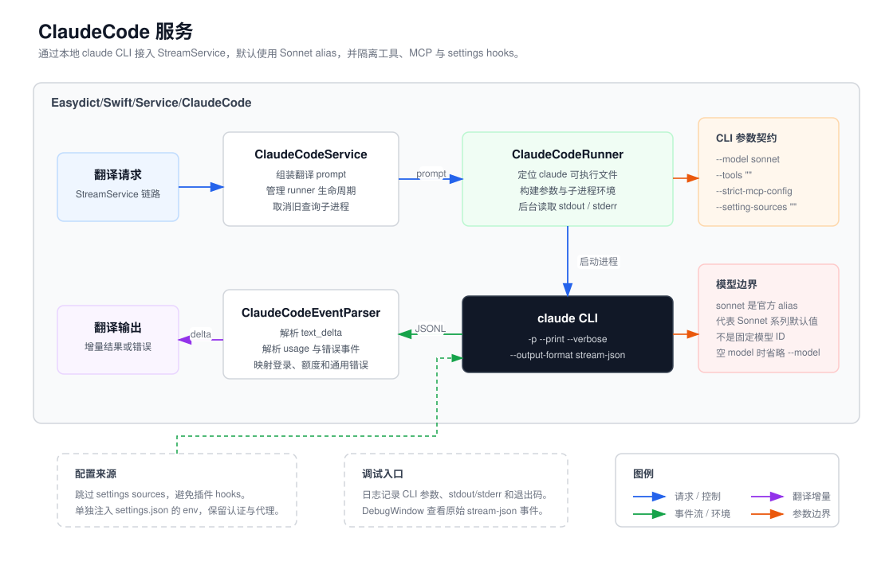

Service / ClaudeCode
ClaudeCode 目录概览
ClaudeCode 把本地 claude CLI 接入 Easydict 的
StreamService 流式翻译链路。
概览
该目录的核心职责是复用 Claude Code 自带的认证、套餐和代理能力，同时把翻译请求限制在
Easydict 需要的最小上下文内。Runner 每次翻译启动一个独立的
claude -p --print 子进程，禁用工具、MCP、settings sources
和会话持久化，并显式注入 ~/.claude/settings.json 中的
env，让认证与代理变量仍能进入子进程。

关键组件
-
ClaudeCodeService.swift接入StreamService.contentStreamTranslate，组装翻译 prompt， 创建当前ClaudeCodeRunner，并在用户取消或新查询开始时终止旧 runner。 -
ClaudeCodeRunner.swift通过登录 shell 探测claude可执行文件并缓存路径，用Process启动子进程，后台读取 stdout/stderr，管理取消状态和 token usage。 -
ClaudeCodeEventParser.swift解析stream-json事件，提取text_delta， 并把登录失败、额度不足、通用 CLI 失败映射为类型化错误。 -
ClaudeCodeLogger.swift与ClaudeCodeDebugWindow.swift在AGENT_CLI_DEBUG下记录和查看原始 CLI 事件，便于定位 CLI 版本升级造成的字段或行为变化。
主流程
-
Service 根据查询上下文生成用户 prompt 和系统 prompt，并调用
ClaudeCodeRunner.run(prompt:systemPrompt:)。 -
Runner 在
Task.detached中定位二进制、构建参数和环境， 然后在中性临时目录启动claude，避免 CLI 扫描用户项目目录。 -
stdout 以 JSON line 形式流出。Runner 边读边解析
content_block_delta，把文本增量 yield 给上层翻译流； 非 delta 控制事件保留到退出后解析错误和用量。 -
子进程退出后，Runner 用控制事件解析 token usage；失败时结合 stdout 和
stderr 生成
ClaudeCodeError，取消则静默结束。
CLI 调用约定
-p/--print以非交互模式执行单次翻译请求。-
--verbose --output-format stream-json --include-partial-messages让 Claude Code 输出可增量解析的 JSON 事件流。 -
--model sonnet使用 Claude Code 官方sonnetalias，表示 Sonnet 系列的当前默认模型；它不是固定模型 ID。 如果调用buildArguments(model: "")，Runner 会省略--model并回退 CLI 默认行为。 -
--tools ""禁用内置工具；--strict-mcp-config在没有--mcp-config时阻止 MCP servers 进入上下文。 -
--setting-sources ""跳过 user/project/local settings， 防止插件 hooks 参与翻译；Runner 仍会单独读取~/.claude/settings.json的env并注入子进程。 --no-session-persistence跳过会话文件 I/O，避免跨查询状态。-
--system-prompt用翻译系统提示替换 Claude Code 默认系统 prompt， 避免工具/agent 指令占用上下文。
调试入口
-
翻译结果异常时先看
Application Support/<bundle>/logs/claude-code/*.log中记录的 CLI 参数、stdout/stderr、退出码和耗时。 -
设置页 Claude Code 配置区域显示二进制安装状态；找不到
claude时返回notInstalled。 -
AGENT_CLI_DEBUG编译下可打开 Debug Log 窗口实时查看事件流。 新 CLI 版本如果改变字段结构，优先扩展事件解析器和错误分类测试。